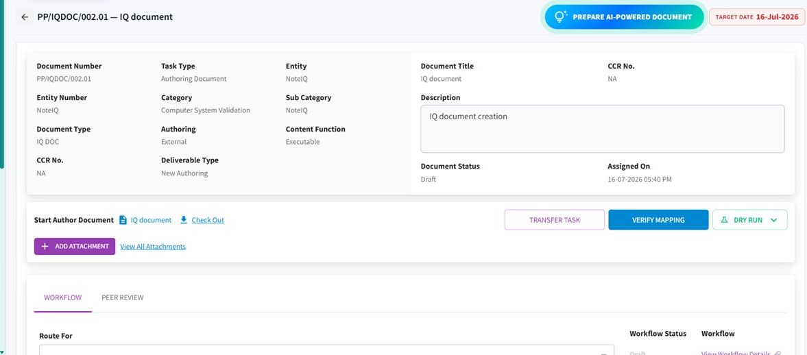

NoteIQ runs the whole validation lifecycle, from URS to periodic review, on one audit-ready system.
A validation is only as good as the record behind it. NoteIQ builds that record as the work happens.
It takes the manual assembly out of validation, the authoring, the cross-referencing, the evidence-gathering, without moving a single qualification decision off a qualified person's desk. For the teams that run on it, three things follow.
AI drafts IQ, OQ and PQ protocols and reports from your approved templates, ready for review.
The matrix assembles as validation progresses, so nothing is cross-referenced by hand.
Every step, signature and discrepancy is timestamped, aligned to 21 CFR Part 11 and EU Annex 11.
One system for every validation type your teams run, from CSV to quality risk assessments.
Each protocol lives in one workspace: its metadata, its workflow and an AI-powered draft, with verify-mapping and dry-run checks before anything is executed.

The NoteIQ document workspace: metadata, AI-assisted authoring and every action in one place.
From the first requirement to the periodic review that keeps a system validated, every stage runs in NoteIQ, with the evidence carried forward from one step to the next.
One system for every validation type your teams run.
Computerized System Validation Equipment Qualification Utility Qualification Process Validation Quality Risk AssessmentsThe same system, across the work: a task assigned to the right executor with the record started, and a protocol executed and signed off step by step.
NoteIQ scans documents for gaps before execution, drafts IQ, OQ and PQ deliverables from your approved templates, and summarises them for review. Every qualification decision stays with a qualified person. The AI capabilities run on PivotAI, the AI layer inside PivotOS.
Your content stays yours: it is never used to train foundation models and stays tenant-isolated.
Gap detection, deliverable generation and reviewer-ready summaries, from your approved content.
Every qualification decision is reviewed and signed off by a qualified person.
Drafts are generated from your templates and controlled content, not invented.
Nothing is released as validated without a qualified reviewer in the chain.
Every deliverable, signature and discrepancy is timestamped and traceable, tracked to closure and ready to show on demand. That is the difference between validation that is fast and validation you can stake an inspection on.
Read the AI Trust Centre for how we govern AI in regulated work.
We will show authoring, execution and the audit trail on your own protocols.